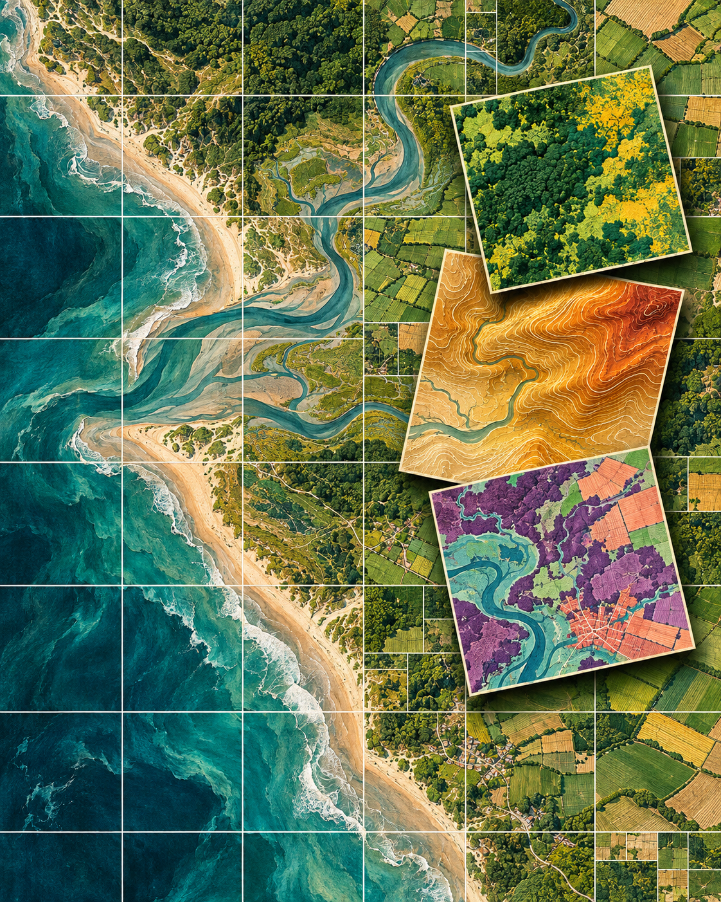
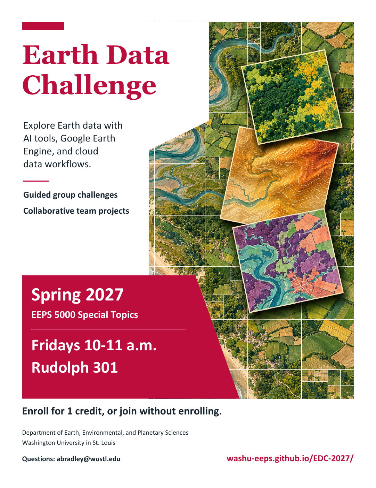

Spring 2027 · EEPS 5000 Special Topics
Earth Data
Challenge
Explore Earth data with AI tools, Google Earth Engine, and cloud data workflows.
Guided group challenges.
Collaborative team projects.

The course
Analyze cloud-hosted data
Earth Data Challenge is a hands-on course in Earth, environmental, and planetary data analysis. Teams begin with short, guided projects and work toward a longer project built around their own question.
Google Earth Engine, cloud data formats, and selective access to cloud-hosted datasets are central to the course. Learn to work with the regions, dates, and variables an analysis needs, while keeping bulk data in place.
Introductions to Jupyter notebooks, Git/GitHub, and AI-assisted coding and debugging are built into the projects. Teams check their results, document data sources and limitations, and produce analyses that others can reproduce.
The planned notebook environment is Compute2 through Open OnDemand. Course access instructions will be provided before the first meeting.
January 22 – April 30
Course schedule
We meet every Friday except March 19,
during spring break.
| Dates | Activity |
|---|---|
| Jan. 22 | Introduction and guided mini-project |
| Jan. 29–Feb. 5 | Project 1 Earth Engine |
| Feb. 12–19 | Project 2 Cloud data access |
| Feb. 26–Mar. 12 | Project 3 Combining datasets |
| Mar. 19 | Spring break · No meeting |
| Mar. 26–Apr. 30 | Final project Team-defined question and analysis |
Possible final-project directions will be introduced on March 12. No project deadline is scheduled during spring break.
Final-project milestones
| Date | Milestone |
|---|---|
| Mar. 26 | Scope the question, form teams, and test data access |
| Apr. 2 | Review proposals and demonstrate a working initial workflow |
| Apr. 9 | Analysis workshop |
| Apr. 16 | Preliminary results and validation discussion |
| Apr. 23 | Exchange notebooks for a reproducibility check; refine presentations |
| Apr. 30 | Final presentations and discussion |
For your projects
Resources
AI-assisted research
Scope a question, write and debug code, and check the results.
Read the workflow →Coding guidelines
Work in small steps and establish that your analysis is correct.
Read the guidelines →Using Git & GitHub
Save your work, share changes, and collaborate with your team.
Read the guide →Join us
Questions about EDC?
Contact Alex Bradley
abradley@wustl.edu
Open to WashU undergraduates, graduate students, and postdocs across disciplines.

Download the poster PDF · 8.5 × 11 inches